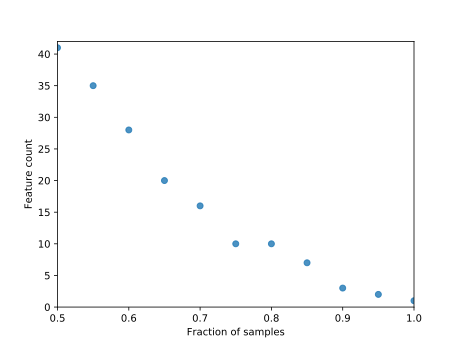

Core features
Feature table summary
Sample count: 47Feature count: 5137

Terminology key
Fraction of samples: The fraction of the total number of samples that a feature must be observed in for that feature to be considered "core".Feature count: The number of "core" features.
Fraction of features: The fraction of the total number of features that are "core" features.
Feature list: The list of "core" feature IDs and their total percentile frequencies.